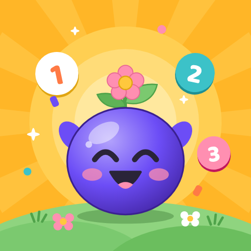

Last updated 6 November 2026
The short version: Onkoo Kids collects no personal data from children or anyone else. There are no accounts, no ads, no analytics, no crash reporting and no developer server. Every game, sticker and garden plant is built into the app and the whole game works in airplane mode.
Grown-ups only, behind a parental gate: an optional tip jar (paid through Google Play; a tip unlocks nothing), a button to rate the app on Google Play, and links to the developer's website and LinkedIn. A child can't reach any of them without the press-and-hold and maths-question gate. None of them sends anything to the developer.
These are the same answers given on the app's Google Play Data safety declaration.
| Data collected by the developer | None — there is no server |
|---|---|
| Data shared with third parties | None |
| Data transmitted off the device | Only when a grown-up uses the tip jar or the rating button, both through Google Play, behind the parental gate |
| Accounts or sign-in | None |
| Advertising or advertising ID | None |
| Analytics, telemetry or crash reporting | None in the app (see §8 for the Google Play Billing library) |
| In-app purchases | Optional tips (four fixed amounts) through Google Play Billing, behind the parental gate. A tip unlocks nothing |
| Chat, social features or user-generated content | None |
| Location, contacts, camera, microphone or photos | Never accessed |
| Voice or audio recording | None — the app only plays its own short sound effects |
| Works in airplane mode | Yes — every game, the map, stickers, the garden, certificates and the grown-ups area |
| Android Auto Backup | Off (allowBackup="false") |
Nothing. There is no server behind Onkoo Kids and no account of any kind. The developer never receives:
All 40 games, the 20 worlds, the stickers, the garden and every certificate are part of the app and run on the phone. Instructions are text and pictures only; there is no voice recording or speech recognition.
So progress survives closing the app, the following is saved in the app's
private storage (a key-value file under the app's private
files/mmkv directory, which the Android sandbox makes unreadable to
every other app):
| What is saved | Detail |
|---|---|
| Progress | The furthest stage reached, best stars per stage, seeds, stickers earned (with the date earned), the garden and its plants, rounds played per game, and which games have been seen |
| Learning summary | For each of the 16 skills, how many questions were answered and how many were right first time — used for the skill rings and the Certificate of Learning in the grown-ups area |
| Play time | Minutes played per day and which days were played — used for the weekly chart and the optional daily time limit |
| Settings | Language (English or বাংলা), age band, daily time limit, sound, reduced motion, Sprout's colour, and whether the introduction has been seen |
| Certificate names | The most recent name typed on the garden certificate and on the Certificate of Learning, so it doesn't have to be typed again (see §6) |
| Tip jar | How many tips have been given, to show a thank-you. Never payment details |
Reset progress in the grown-ups area erases the progress, learning summary, play time and certificate names, and keeps the settings and the tip count. Clearing the app's data in Android Settings, or uninstalling the app, removes everything.
Everything that could cost money, leave the app or change settings sits in the grown-ups area, behind a two-step gate: press and hold a button for three seconds, then answer a multiplication question written in words (for example "What is seven times eight?"), so that a young child can't read or solve it. The gate is checked on the phone; nothing is sent anywhere. Children never see the tip jar, the rating button or the developer's links.
Onkoo Kids is free and complete. Grown-ups may leave an optional tip in one of four fixed amounts, as a way to support the developer. A tip unlocks nothing and changes nothing in the game.
Tips are paid through Google Play Billing. Google handles the payment and your payment details; the developer never sees them. The app connects to Google Play only while the grown-ups area is open, to show local prices and to complete a tip you choose, and disconnects when you leave it. Google's handling of purchases is described in the Google Privacy Policy and the Google Payments Privacy Notice.
When the garden is finished, and from the grown-ups area, the app can draw a certificate with a child's name on it. The name is typed by you, drawn into the picture on the phone, and kept only as the most recent name in the app's private storage (§2). It is never sent anywhere.
Each of these happens only when you tap that button. Nothing is uploaded by the app.
The released build declares exactly these permissions. None of them is a runtime permission, so the app never asks for anything.
| Permission | Comes from | Why it is there |
|---|---|---|
INTERNET | The app, and the file-saving library | Google Play Billing for tips and the Play review card, both in the grown-ups area. The games never use the network |
ACCESS_NETWORK_STATE | The file-saving library and Google Play Billing | Lets those libraries check whether a connection exists |
com.android.vending.BILLING | Google Play Billing | The optional tip jar |
WAKE_LOCK | The file-saving library | Declared by the library for long file operations. The app only uses it to write certificate pictures |
VIBRATE | The haptics library | Gentle taps on answers. Off when sound is off or reduced motion is on |
The release build also carries
com.skrchowdhury.onkookids.DYNAMIC_RECEIVER_NOT_EXPORTED_PERMISSION,
a signature-level entry generated by an Android system library so the app's
internal receivers are not exposed to other apps. It grants access to
nothing. There is no storage, location, camera, microphone,
contacts, phone, notification or advertising-ID permission. Saving a certificate
uses Android's photo collection, which needs no permission.
Onkoo Kids works fully offline. It goes online only when a grown-up, inside the grown-ups area, uses the tip jar, the rating button or a developer link. There is no developer server to reach.
The app is built with React Native and bundles open-source libraries for drawing, animation, gestures, sound effects, haptics, local storage and saving or sharing pictures, plus Google's Play Billing and Play In-App Review libraries. There is no advertising network, analytics SDK, attribution SDK, crash reporter or social-media SDK.
Two details, for completeness:
Off. The app sets android:allowBackup="false", so Android does not
copy its data to Google Drive or to a new phone.
There is no deletion request to send the developer, because the developer holds no copy of any data.
On the phone, the app's data is protected by the Android app sandbox. The only traffic, to Google Play, goes over HTTPS. The strongest protection is structural: there is no developer server holding anyone's data, so there is nothing of the developer's to breach.
Onkoo Kids is made for children aged 4–8 and is published under Google Play's Families Policy. It is built to meet that policy and children's privacy laws such as COPPA (US) and the GDPR's rules for children (EU/UK):
If you believe a child's information has somehow reached the developer, please write to the address below and it will be dealt with promptly.
Data-protection laws such as the GDPR give you rights of access, correction, export and erasure over personal data a service holds about you or your child. The developer holds none. Everything the app keeps is on your phone, where you can erase it at any time (§10), and purchase records are managed through your Google account.
Any revision will be posted on this page with a new date at the top. If Onkoo Kids ever began collecting something, this page would say so before the version that did it shipped.
| Date | Change |
|---|---|
| 6 November 2026 | First published for version 1.0. |
Questions about this policy or the app: emailofs2o@gmail.com